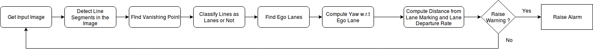

Lane Departure Warning (LDW) systems attempt to detect lane lines in real time, and also compute the distance of the vehicle from both lanes. The variation in distance from the lane boundary is used to generate departure velocity. Based on the departure velocity, the time to lane departure is calculated. If the time is below the specified threshold a warning can be raised.
Lane Departure Warning (LDW) systems are designed to warn the driver of the vehicle, in case the vehicle begins to drift out of its lane without turning on the turn signal. The system is designed to minimize collisions because of driver distraction or drowsiness.